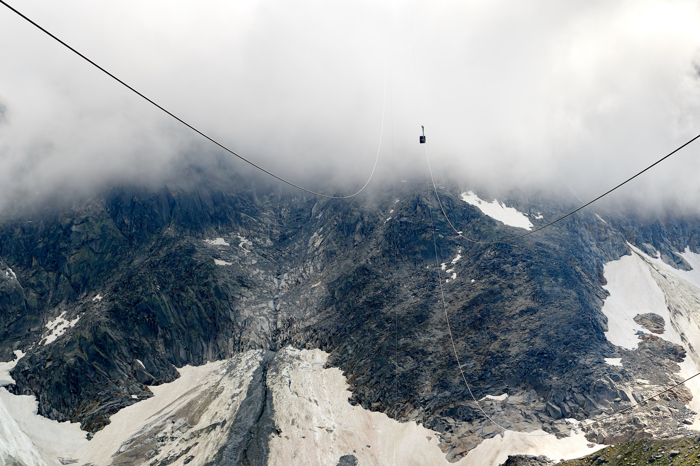
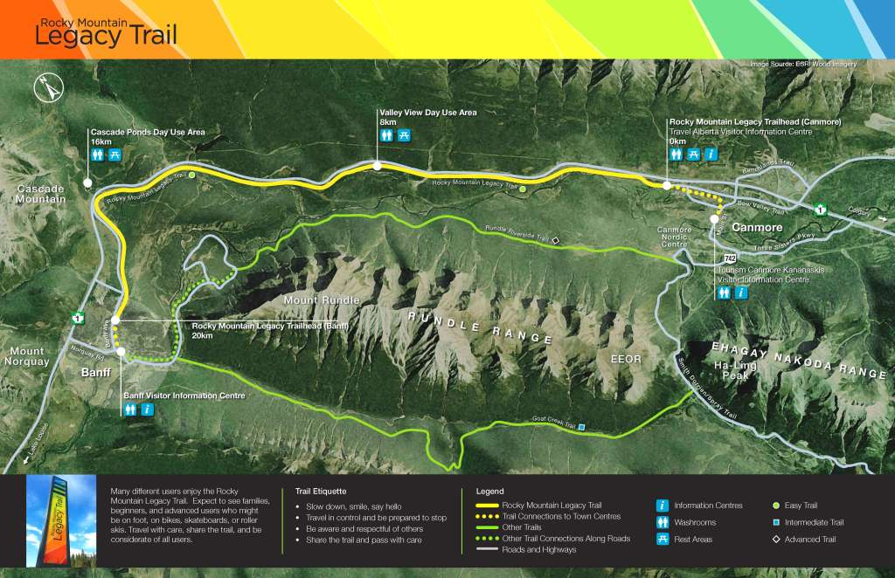

Flanked on all sides by the Rockies, Alberta's favourite mountain town offers an irresistible combination of luxury lodges, perfect powder, renowned restaurants and energetic nightlife.
With both summer and winter appeal, Banff lures visitors to its stores, spas and slopes year-round. A thriving arts scene, and proximity to Lake Louise and Kananaskis County, add to its allure.
Don't miss the hoodoos, intriguing rock spires, in Banff National Park, Canada's first and the world's third - National Park.
Toursit Attractions
Banff Gondola
posted on
With six stunning mountain ranges and the sweep of the Bow Valley before you, views from the Sulphur Mountain summit are nothing short of breathtaking.
And there’s much more to discover in a state-of-the-art building that will heighten your senses at every turn.The Banff Gondola now gives visitors more to see,
do and learn than ever before with state-of-the-art facilities providing everything from passive observation to hands-on interactive experiences.
Combining an unparalleled rooftop view, expansive interpretive area, a highly-immersive specialty theatre, private event facilities,
retail space, and all-new food and beverage offerings, the Banff Gondola remains Banff’s number one must-see attraction and mountaintop experience.

Banff Legacy Trail
posted on
TRAIL INFO
Trail type:
Single track
Elevation:
2000 ft
Length:
14.5 miles
Skill level:
beginner to intermediate
If you are looking for great scenery and a great workout without all the technical difficulty of other trails, Northridge Loop is for you.
The ridge runs east to west, with Ojai Valley on one side and Rose Valley on the other. The trail features amazing views of both valleys plus the Los Padres National Forest.
There are a total of 6 trail heads spread out over the 14.5 mile loop, so there are plenty of places to get on or off the trail.
Hiking is permitting along all trails, so ride with caution and don't override your stopping power.
Skill level
While the overall trail is fine for beginners, two spurs, Gridley and Pratt, are much narrower and technical, so be sure to check the signage before choosing a trail.
While there are no steep drops or bombs on this trail, there are several areas of the trail that extend over bare rock. The paths are marked, but there are canyon areas that you should be aware of. Before starting any downhill section make sure you know the path!
Trail Map and Elevation

"You’ll kick yourself if you miss the Gondola ride to Sulfur mountain. The view was breathtakingly beautiful"
Nick Brazzi - The Complete Guide to Trails
Final thoughts
It’s not the biggest, it’s not the highest, and it’s not the most technical trail in Ojai, but in my opinion, it’s the best. It has an amazing variety of surfaces and trail types, so much so that you really can say there is something for everyone on the Northridge. Check it out, and you’ll be taking your friends back up the trail over and over again.
I also want to mention that on
of every year, the Ojai Biking Club sponsors a trail cleanup day. If you want to help out, or just join a good group of folks who love this trail, come by!